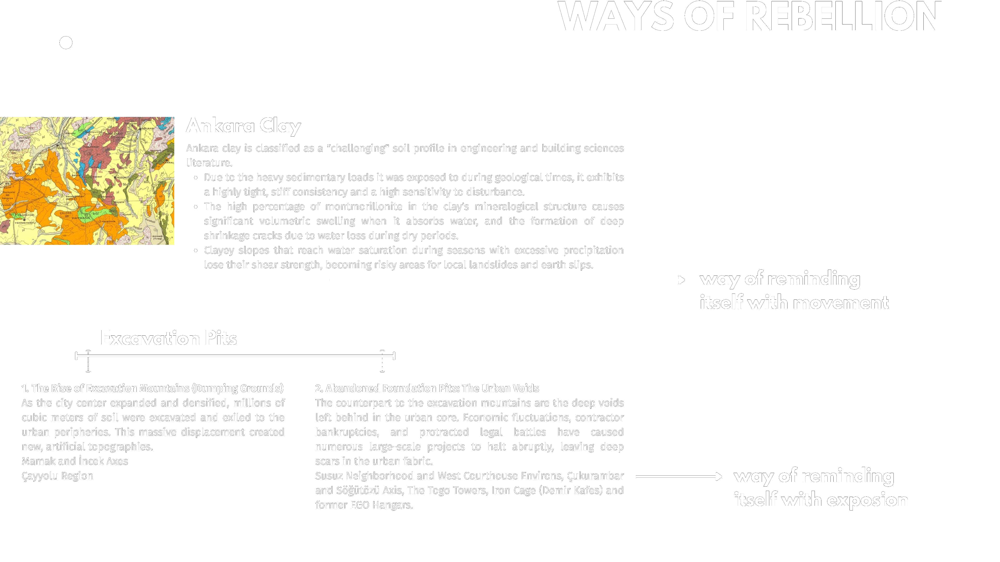
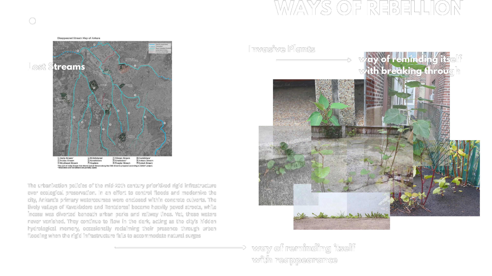
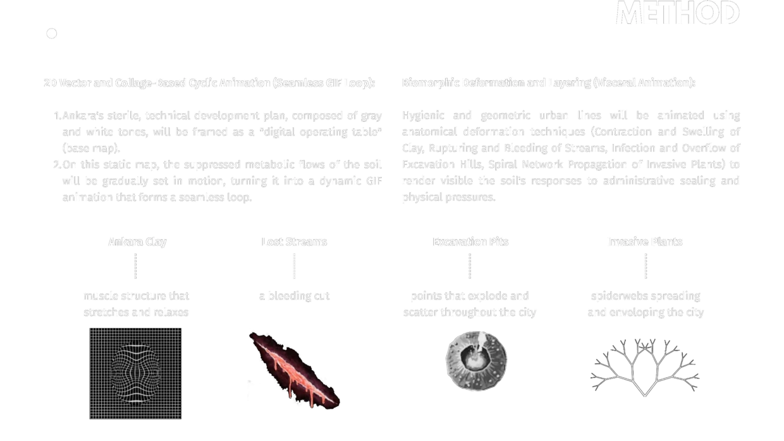

Memory Beneath the Concrete: Fluid Ground, Lost Streams, and the Resistance of Invasive Spaces in Ankara
Rabia ÇELİK
How does the ground within Ankara's urban soil metabolism—sealed by political and administrative decisions—reveal its ecological presence and lost memory as a spatial 'silent rebellion' through floods, swelling clay, and invasive plants in residual spaces?
In Ankara, the urban ground is a commodified hybrid structure rendered invisible by white spots on planning documents, or encoded during construction processes merely as a static substrate and an 'excavation load' to be transported. However, the soil refuses to be a passive material beneath the concrete layers cast over it by administrative decisions; it carries out a physical and metabolic 'silent rebellion' through the swelling of clay layers, the floods of culverted streams, and the invasive plants resisting within the city's pores. By making visible these dynamic acts of resistance by Ankara's soil within the urban infrastructure, this study advocates for making urban design more inclusive, encompassing both nature and the soil's own processes.


